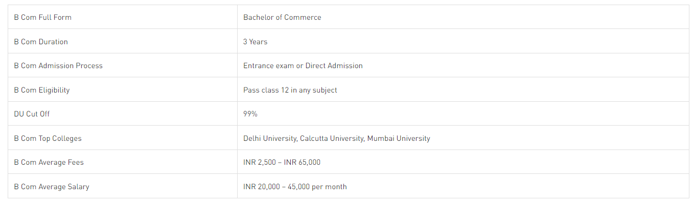

Bachelor of Commerce
This an undergraduate degree in business, usually awarded in Canada, Australia, India, Sri Lanka, Pakistan, Ireland, New Zealand, Ghana, South Africa, Myanmar, Egypt, and additional Commonwealth countries.
Course view

B Com: Eligibility Criteria
Candidates must have completed and passed class 12 or equivalent from a recognized board.
B Com Specialization List
- B Com Accounting and Finance
- B Com Banking Management
- B Com Marketing
- B Com Financial Accounting
- B Com Computer Applications
- B Com Tax Procedure and Practice
- B Com Applied Economics
B Com Jobs
- Tax Consultant
- Auditor
- Stock Broker
- Finance Consultant
- Insurance Consultant
- Export-Import Manager